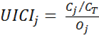

Analysis of research collaboration between universities and private companies in Spain based on joint scientific publications
Carlos Olmeda-Gómez and María Antonia Ovalle-Perandones
Department of Library and Information Science, Carlos III University, 28903 Getafe, Madrid, Spain. SCImago Group
Félix de Moya-Anegón
SCImago Group, Institute of Public Goods and Policies, Spanish National Research Council, 28037 Madrid, Spain
Introduction
The publication of research results by private companies might appear to run counter to their interests. Initially, private business is geared more to obtaining and appropriating property rights than to seeking acknowledgement for discoveries or breakthroughs, a modus operandi more often associated with the rewards for scientific research. The pursuit of recognition, which entails sharing discoveries in short order, primarily through publication, predominates in academic science as the way to establish property rights over findings. Private sector activities are less prone to be freely disclosed, inasmuch as such disclosure could have an adverse impact on the profit to be earned from the invention or technology in question. Consequently, the codes of conduct governing academic science and industrial research differ, with the former oriented more to the public and the latter to the private domain (Dasgupta and David, 1987, 1994; Stephan, 1996; Ziman, 1998).
These two approaches are the idealised extremes of a continuum whose bounds have been blurred by the increasing inter-linkage and intricacy of the institutional structures that govern scientific practice in the two domains.Many academic researchers who work out of public laboratories or universities are at the same time involved in the privatisation of knowledge through patents, the founding of science-based companies and other activities geared to commercialising and transferring the technology stemming from their research findings (Etzkowitz, 1998). The result is divergence between the private rights associated with such activities and the scientific rules on basic research, which envisage the publication of results (Merton, 1985). On occasion, academic researchers engaging in private activities publish their results selectively and hold back key data or techniques in connection with their research with a view to reaping higher future profits, such as in research-intensive companies (Walsh, Cohen and Cho, 2007). Hence, depending on the reward system, today's academic researchers, life science researchers in particular, discriminate about information that is to be freely or partially disclosed, and information to be kept confidential, depending on the commercial interests at stake (Blumenthal et al., 1997).
Similarly, researchers in private companies also publish the results of their (essentially applied) research (Nelson, 1959). The possible motivations for so doing have been described, in theory at least. Publication has been viewed as an avenue for a company to improve its research results; for private researchers to switch jobs more easily, having gained recognition in other spheres where research is also conducted; and for companies to recruit high level researchers and garner interest for their products, improve their corporate image and favour interconnection and collaboration (Rosenberg, 1990; Hicks, 1995). In research-intensive companies, such as biotechnology firms, researchers are authorised and encouraged in a number of ways to publish their results, but they are less frequently allowed to pursue lines of research in which they were involved prior to joining the company (Stern, 2004). Companies whose founders hold PhDs are more prone to establish liberal scientific publication policies (Ding, 2011). In the pharmaceutical industry, where technological competition is fierce, empirical evidence shows that publishing scientific articles helps drug companies position their innovations on the marketplace (Polidoro and Theeke, 2012).
It is not unusual, then, for researchers in private companies to publish scientific papers, albeit less assiduously than their academic peers. In the 1980s, companies engaging in the publication of research were located primarily in the United States, Japan, Switzerland and the Federal Republic of Germany. On occasion, publications authored by high technology, research and development-intensive firms conducting business in electronics, chemicals, pharmaceuticals or information technology, made significant contributions to the literature in engineering, physics, technology, life science or chemistry (Godin, 1996).
Such projects are frequently conducted in conjunction with university researchers. Tijssen, van Leeuwen and Korevaar (1996) analysed co-authorship patterns in five major Dutch multi-national companies in conjunction with the subject areas of their core business. In a study conducted on company production and partnering in Sweden, Okubo (2000) observed a gradual increase in the internationalisation of Swedish enterprise's scientific output in research-intensive areas: biotechnology, engineering and chemistry. Calvert and Patel (2003) published a paper on co-authorship between private enterprise and the top 20 British universities between 1981 and 2000. Their results showed that the research majors, along with technical and newly created universities, engaged most actively in joint publications with companies, particularly in the pharmaceuticals, electric power and electronic industries. In Japan, Sun, Negishi and Nishizawa (2007) analysed the co-authorship ties between industry and universities. They discussed inter-regional differences, showing that universities are Japanese companies' preferred partners but not vice-versa, and reasoned that the decline in publishing activity by companies in international journals may be a symptom of the tendency of companies to participate less often in basic research during economic recession. They further contended that private sector investment in research is increasingly geared to applied science directly related to company output and profit, arguing that basic research can be undertaken by firms when the economy is healthy, but recessions deter engagement in such activities. This heightens private sector dependence on the research conducted by universities, which is not linked to immediate earnings.
In Denmark, Frederiksen (2004) analysed Danish company partnering and citation patterns and concluded that higher citation rates were obtained in disciplines where papers were signed by a larger number of authors and entailed greater international collaboration. Abramo et al. (2009) conducted a study on university-enterprise collaboration in Italy based on co-authorship analysis. The findings showed that while Italian researchers who partnered with the private sector published in journals with lower impact than other academics, their productivity was higher and they tended to engage in more inter-disciplinary research. Tijssen, van Leeuwen and van Wijk (2009) conducted a macro-study on papers co-published by the world's 350 major universities in 2002-2006. That paper advocated the utility of similar assessments as a tool for national and international comparison of research-oriented universities.
Archambault and Larivière (2011) analysed Canadian companies' scientific output and patents from 1980 to 2005. Their analysis inferred that companies awarded patents published scientific papers more geared to basic research than companies that published papers but did not patent their results. Moreover, the papers published by the former received more citations and appeared in journals with a higher citation rate, while their patents were also cited more intensely.
Company-university partnering, inter-company co-authorship and university-enterprise technology transfer in Spain have all been addressed in the literature (see, Olmeda-Gómez et al., 2008; Perianes-Rodríguez et al., 2011; Caldera and Debande, 2010). Mobility data, in turn, describe certain features of the growing interaction between Spanish industry and universities (Cruz-Castro and Sanz-Menéndez, 2005; García, Mas and Polo, 2012). Information has likewise been published on university professors' propensity to interact with private enterprise (Azagra, Archontakis and Yegros, 2007), the patents awarded to Spanish universities (e.g., Azagra, Fernandez and Gutierrez, 2003) and the relationship between university location and the establishment of new technology companies (Acosta, Coronado and Flores, 2011). Nonetheless, bibliometric descriptions of the scientific research conducted by private enterprise in conjunction with Spanish universities at a national level have yet to be undertaken. Based on co-authorship metrics, such studies would identify the domestic and foreign companies that participate in joint publications with Spanish universities.
Co-authorship of scientific papers implies the existence of more than one author. Institutional co-authorship means that more than one author affiliation is listed, indicating that the authors work in several institutions, departments, entities or countries. It is envisioned as an indirect measure of a certain degree of collaboration among co-authors (Melin and Person, 1996). In bibliometric studies (Jeong, Choi and Kim, 2011), it is regarded as the standardised approach to analysing collaboration (Lundberg et al., 2006) because constitutes a reliable, verifiable and invariable way to observe joint research activities and obtain reasonable and comparable information on a significant scale. Its measurement has no effect on partnering and its analysis is fairly inexpensive, making it one of the most popular bibliometric indicators (Katz and Martin, 1997), and furthermore coauthorship relations are a most formal indicator of international collaboration (Leydesdorff et al., 2013).
The present article, which draws on the literature presented above, is structured as follows: The first section discusses the objectives and underlying questions, followed by a description of the origin of the data and the methodology, in particular the indicators used. The results are set out in the subsequent section, and discussed in the final part of the article, which also contains the conclusions.
Objectives
The present study explores research collaboration between public and private institutions in Spain. More specifically, the objectives are to:
- describe the macro-scale, quantitative features of the scientific output of companies conducting business in Spain
- analyse the institutional links between Spanish companies, or multi-nationals including subsidiaries in Spain and Spanish public universities in terms of co-authorship of scientific and technical papers published in international journals.
The questions that the study seeks to answer are:
- how does the number of papers authored or co-authored by private enterprise compare to the number involving all other institutional sectors: universities, public research bodies and hospitals?
- does enterprise specialise in any given areas? If so, in which?
- which companies and universities in Spain co-publish with each other most intensely?
- what is the origin and geographic distribution of the companies involved? Where in Spain do universities co-publish most intensely with private enterprise?
Methods
Source of data
This article contains a secondary analysis of bibliometric data on research institutions drawn from the Scimago institutions ranking database (Scimago, 2012a). Scimago institutional rankings contain bibliometric indicators on scientific output, impact, subject specialisation and international collaboration for institutions engaging in research the world over. These data are derived from Scopus, Elsevier's abstract and citation database. Scopus has wide research journals coverage (Moya-Anegón et al., 2007), with 19,400 titles as of November 2012 (Scopus, 2012) and a broader scope than the Web of Science (Leydesdorff, Moya-Anegón and Guerrero-Bote, 2010). Moreover, it provides robust tools for measuring national scientific production (Archambault et al., 2009). Scimago institutional rankings have been used in many bibliometric studies (Moed et al., 2011; Benavent-Pérez et al., 2012; Bornmann, Moya-Anegón and Leydesdorff, 2012).
The Scimago institutional rankings classifies institutions by sectors, further to the criteria set out in the Frascati manual (OECD, 2003). These sectors, e.g., groupings of institutions with common features that engage in research, are: Government: covering public bodies, departments and bureaus, with a standing State budget; Health: public and private hospitals, clinics and medicine-related scientific organizations; Higher education: higher education institutions or universities; Private: this sector covers all companies, bodies and institutions whose primary business consists of producing goods and services for public sale. It also covers not-for-profit institutions essentially engaging in corporate services and public enterprise, e.g., government-controlled or government investee companies, and others: foundations, non-governmental organizations, international organizations and, in general, not-for-profit institutions that do not operate in the market. The present analysis covered the output of 5,160 institutions across the period in the following categories: government (534), health (2,687), higher education (97), private (1,211) and others (631).
The Scopus subject classification, based on journal classification and applied in the Scimago institutions ranking, were examined. Scopus divides journals into 307 specific subject areas based on bibliometric procedures and peer review (Kähler, 2010). These are, in turn, grouped into twenty-six subject areas plus one general subject area covering multi- or inter-disciplinary journals such as Nature or Science (Scopus, 2012).
The two fundamentals of co-authorship analysis are the way the concept is defined and the way jointly signed papers are tallied. In the present study, a publication was regarded to be co-authored by a university and a private company when at least one of the addresses in the affiliations referred to a Spanish university and one to a Spanish company, a foreign subsidiary of a company withe headquarters in Spain or a company with registered offices abroad (Glänzel and Schubert, 2004). That means that data were attributed to universities or companies by virtue of the appearance of the institutional name in the database address field, denoting the existence of inter-institutional collaboration. Since not all forms of collaboration lead to co-authored articles, this type of collaboration is sometimes termed formal collaboration.
Co-authored papers were tallied using the full counting method for technical reasons, in which the entire paper is attributed to each institution mentioned in the affiliations. If a publication has more than one coauthor (working at different institutions), each unique collaborating institution receives one full credit. Consequently, the total numbers are greater than the number of objects in the study, given the non-additive nature of the procedure (Gauffriau, Larsen, Maye, Roulin-Perriard and Ins, 2007).
Indicators
Output was defined as the total number of papers of all types, including citable and non-citable documents, published in journals indexed by Scopus, with an institutional address attributed to a given organization within a sector, including companies headquartered in Spain or Spanish universities. It quantifies scientific activity in a sector and can be used to compare activity between institutions in the same or different sectors.
Citations was taken to mean the absolute number of citations obtained by an institution's output for citable documents only (research articles, reviews, and conference papers) in 2003-2011 published in journals indexed in Scopus. This indicator reflects the merit, quality, or significance of an institution's research (Smith, 1981).
Citations per paper was defined as the mean number for an institution's output (research articles, reviews, and conference papers). This parameter was calculated with a three-year window, as follows: for articles published in 2003, numbers were tallied in 2003-2005; for articles in 2004, in 2004-2006, and so on. As output was only available through 2011, for the last two years of the period, 2010 and 2011, the citation windows covered only two years and one year, respectively.
For the period 2003-2011, the compound annual growth rate (CAGR) was taken as the percentage-wise difference in output (number of papers) between 2011 and 2003. It was calculated from the formula (present value / past value)1/n-1, where n = number of years in the period.
Three types of collaboration were defined and the percentages determined: international, international/national, and national. Publications resulting from cooperation between researchers in a Spanish company and authors in one or more foreign countries were regarded as international publications. Papers involving collaboration between researchers in at least two Spanish companies and foreign researchers were classified as international/national. In national publications, all the authors were from the same country but different companies. This category also covers publications co-authored by researchers from the same company (intramural collaboration).
The normalised average impact score was defined as the relative number of citations received by research articles, reviews, and conference papers in a specific field compared to the mean worldwide citations received by papers of the same type, year and subject area. It denotes the scientific impact attained by an institution's output, calculated in a way that eliminates any influence of institutional size or disciplinary profile. Citation values were normalised paper-by-paper. The normalization of the citation values is done on an individual article level. If the normalization is done on an article level, a few highly cited articles in a moderately cited research area may contribute disproportionately to the value of the field normalized citation score. The values, expressed in percentage, compare the institution's average impact in a given field to the mean world impact for the field, normalised to 1; e.g., a score of 0.8 means that the institution's papers were cited 20% less than the world average and 1.3 that they were cited 30% more than the world average (Rehn and Kronman, 2008; Lundberg, 2007).
High quality publications (Q1) was the term used to mean publications published in the world's most influential journals, e.g., the first quartile (25%) journals in each subject areas as ranked by the Scimago Journal Rank indicator (SJR) (Guerrero-Bote and Moya-Anegón, 2012; SCImago, 2012b).
A variation on the indicator proposed by Frame (1977), known as the activity index (Schubert, Glänzel and Braun, 1988), was used here and called the university-industry co-authorship index (UICI). This index is a relative measure of the intensity of a given university's co-authorship with companies in all subject areas (Rousseau and Yang, 2012; Rousseau, 2012; Stare and Kejžar, 2014).
UICI university j= the ratio of j's output in collaboration with industry to the total national university output in collaboration with industry over j's share in total university scientific output.
Schematically:

where:
Cj is university j's output in collaboration with industry
CT is the total national university output in collaboration with industry
Oj is university j's share in total university scientific output
UICI=1 is an indication that the percentage of papers published by the university involving university-enterprise collaboration is the same as its percentage contribution to national output; UICI>1 means that university-enterprise collaboration is higher than its share in national scientific output, and UICI<1, that it is lower.
The regional university-industry co-authorship index (RUICI) is a variation on the preceding formula designed to identify regional differences, where the individual university values j are replaced by the aggregate value, i, for all the papers published by the universities concerned in the period 2003-2011.
RUICI for region i = the ratio of the aggregate output of universities in region i in collaboration with industry to total national output in collaboration with industry over i's share in total university scientific output.
Schematically:
where:
Ci is the aggregate output of the universities in region i in collaboration with industry
CT is the total national university output in collaboration with industry
Oi is i's share in the total national university scientific output
Overall trends of private Spanish publications
The key characteristics of output co-authored by companies in Spain were first identified. The breakdown of scientific output by sectors (Table 1) revealed that the number of Spanish papers published in international journals grew steadily in the period, at a rate of 8.4% yearly. This translated into a substantial rise in Spain's overall scientific performance on the international scale. By 2011, the country accounted for approximately 3% of total worldwide output (Scimago, 2012b).
| Year | All papers | Higher education | % | Health | % | Government | % | Private | % | Others | % |
|---|---|---|---|---|---|---|---|---|---|---|---|
| 2003 | 44167 | 24036 | 54.42 | 10989 | 24.88 | 7751 | 17.55 | 934 | 2.11 | 457 | 1.03 |
| 2004 | 49749 | 27124 | 54.52 | 11783 | 23.68 | 8786 | 17.66 | 1669 | 3.35 | 387 | 0.78 |
| 2005 | 56279 | 30565 | 54.31 | 13503 | 23.99 | 9893 | 17.58 | 1791 | 3.18 | 527 | 0.94 |
| 2006 | 62727 | 34478 | 54.97 | 14971 | 23.87 | 11428 | 18.22 | 1418 | 2.26 | 432 | 0.69 |
| 2007 | 67930 | 37759 | 55.59 | 15866 | 23.36 | 12445 | 18.32 | 1491 | 2.19 | 369 | 0.54 |
| 2008 | 74280 | 40130 | 54.03 | 17283 | 23.27 | 13568 | 18.27 | 1556 | 2.09 | 1743 | 2.35 |
| 2009 | 76830 | 43546 | 56.68 | 16553 | 21.54 | 13990 | 18.21 | 1259 | 1.64 | 1482 | 1.93 |
| 2010 | 78522 | 45619 | 58.10 | 16148 | 20.56 | 14746 | 18.78 | 906 | 1.15 | 1103 | 1.40 |
| 2011 | 83275 | 46667 | 56.04 | 18760 | 22.53 | 16070 | 19.30 | 699 | 0.84 | 1079 | 1.30 |
| 2003-11 | 593759 | 329924 | 55.57 | 135856 | 22.88 | 108677 | 18.30 | 11723 | 1.97 | 7579 | 1.28 |
| CAGR | 7.30 | 7.65 | 6.12 | 8.44 | -3.17 | 10.02 | |||||
| Mean | 65973 | ||||||||||
| S. Dev | 12870.19 | ||||||||||
The university sector authored 55.7% of all of Spain's scientific papers published during the period. Its contribution rose at a compound annual growth rate of 7.65%. Output by the Health sector came to 22.8 % of the total, while the public institutions grouped under the heading Government accounted for 18.3d showed the highest pace of growth, with a growth rate of 8.44%. Enterprise (private sector) published 11 723 papers, for 1.97 per cent of the national total. At -3.17%, its growth rate was much lower than in any of the other sectors. After peaking at 3.35% of total national output in 2004, its share declined gradually to just 0.84 % (699 papers) in 2011. According to these figures, in relative terms, Spanish enterprise's scientific output has been decreasing since 2009.
Its participation declined in step with the downturn in Spanish investment in research and development. After rising steadily from 2000 to 2008, at a pace of 12.3% yearly from 2000 to 2005 and a somewhat less intense 7.4% from 2005 to 2010, nominal research and development spending grew by only 0.05% in 2010. In constant euros, i.e., factoring in inflation, the growth rate was negative: -0.9% (Fundación Cotec, 2012).
Table 2 gives the output data for Spanish companies by type of collaboration. The largest share of company output involved only national organizations, although it declined across the period. In 2003, 70% of the papers published by enterprise involved collaboration with no foreign country; i.e., the scale of internationalisation was very small. By the end of the period, in 2011, that percentage had declined to 47.2% as a result of the rise in partnering with organizations in other countries. Hence, the highest compound annual growth rate in the private sector, at 9.0%, was recorded for output involving more than one country. The growth rate for national plus international output was 1.6%, while the rate for papers involving national collaboration declined, albeit at a much faster pace: -4.3%.
| 2003 | 2004 | 2005 | 2006 | 2007 | 2008 | 2009 | 2010 | 2011 | |
|---|---|---|---|---|---|---|---|---|---|
| All papers (1)* | 44167 | 49749 | 56729 | 62727 | 67930 | 74280 | 76830 | 78522 | 83275 |
| Papers authored by industry (2) | 934 | 1669 | 1791 | 1418 | 1491 | 1556 | 1259 | 906 | 699 |
| (2)/(1) % | 2.1 | 3.4 | 3.2 | 2.3 | 2.2 | 2.1 | 1.6 | 1.2 | 0.8 |
| Total papers, national (TPN) | 13621 | 15479 | 17671 | 20544 | 22240 | 25019 | 24982 | 25170 | 25227 |
| Industry papers, national (IPN) | 420 | 547 | 612 | 641 | 686 | 739 | 542 | 355 | 257 |
| IPN/TPN (%) | 3.1 | 3.5 | 3.5 | 3.1 | 3.1 | 3.0 | 2.2 | 1.4 | 1.0 |
| Total papers, international / national (TPIN) | 5706 | 6723 | 7770 | 9320 | 10772 | 12430 | 14012 | 15879 | 16650 |
| Industry papers, international / national (IPIN) | 117 | 127 | 154 | 204 | 212 | 246 | 208 | 141 | 107 |
| (IPIN)/TPIN) % | 2.1 | 1.9 | 2.0 | 2.2 | 2.0 | 2.0 | 1.5 | 0.9 | 0.6 |
| Total international papers (TIP) | 8398 | 9463 | 10915 | 12075 | 13155 | 14161 | 15186 | 16331 | 17618 |
| Industry papers, international (IPI) | 162 | 195 | 248 | 263 | 305 | 311 | 305 | 291 | 262 |
| (IPI/TIP) % | 1.9 | 2.1 | 2.3 | 2.2 | 2.3 | 2.2 | 2.0 | 1.8 | 1.5 |
| * All types of papers by sectors. Whole counting method. | |||||||||
Figure 1: Business collaboration profiles in co-authored research output in Spain, 2003-2011
Disciplines and impact
A number of indicators were calculated to disaggregate Spanish enterprise scientific output and the impact of its research by discipline (Table 3). Data for sixteen of a total of twenty-seven scientific fields are given in the table. In all, 95.8% of private sector output was in these sixteen fields. The first nine accounted for 89% of total industry output, and three of every ten papers fell in one of two fields: biochemistry, genetics and molecular biology (18.8), or medicine (16.6) (column 3). Spain followed approximately the same pattern as other western European nations in that respect (Okubo and Sjöberg, 2000; Frederiksen, 2004; Moya-Anegón and Herrero-Solana, 2013). At the same time, significant research volumes were recorded in engineering, chemistry, agricultural and biological sciences and computer science, each of which accounted for upward of 5% of private sector output. The share of fields such as environmental science or chemical engineering, however, was 3% or lower.
Private enterprise research effort represented a significant proportion of Spanish output in certain specific areas (column 7): energy (6.5 %); veterinary science (4.3%); and pharmacology, toxicology and pharmaceuticals (3.6%), three of the fields where Spanish industry concentrated its scientific activity.
The subject area where private sector research was most intense, biochemistry, genetics and molecular biology, was also the area with the lowest normalised impact (0.73: column 5), for it was the area where the percentage of papers published in high quality journals was lowest (15.39%: column 6). In physics and astronomy, the normalised impact was 1.32 and in the areas with the highest share of total Spanish research, impact was consistently higher than the world mean: 1.88 in veterinary science, 1.12 in energy and 1.02 in pharmacology, toxicology and pharmaceuticals (column 5).
| Field | Total industry output* | Field output as % of total industry output* | Cites per paper** | Normalised average impact score*** | % industry output in SJR Q1* | Industry output as % of total national output* |
|---|---|---|---|---|---|---|
| Biochemistry, genetics and molecular biology | 2534 | 18.8 | 6.64 | 0.73 | 15.39 | 3.3 |
| Medicine | 2239 | 16.6 | 9.82 | 1.09 | 49.08 | 1.2 |
| Engineering | 1290 | 9.5 | 4.44 | 1.14 | 36.59 | 2.8 |
| Chemistry | 974 | 7.2 | 12.76 | 0.96 | 63.14 | 1.7 |
| Agricultural and biological sciences | 920 | 6.8 | 10.33 | 1.19 | 60.11 | 1.4 |
| Computer science | 723 | 5.4 | 4.59 | 1.20 | 27.94 | 1.9 |
| Materials science | 619 | 4.6 | 6.76 | 1.07 | 52.83 | 2.2 |
| Immunology and microbiology | 547 | 4.0 | 14.93 | 1.00 | 37.48 | 2.1 |
| Physics and astronomy | 535 | 4.0 | 10.25 | 1.32 | 41.12 | 0.9 |
| Pharmacology, toxicology and pharmaceuticals | 525 | 3.9 | 11.70 | 1.06 | 68.57 | 3.6 |
| Chemical engineering | 442 | 3.3 | 6.24 | 0.90 | 47.51 | 2.4 |
| Environmental science | 400 | 3.0 | 10.78 | 1.13 | 66.25 | 1.4 |
| Energy | 357 | 2.6 | 5.19 | "1.12 | 58.82 | 6.5 |
| Mathematics | 324 | 2.4 | 2.76 | 0.95 | 13.27 | 0.9 |
| Earth and planetary sciences | 300 | 2.2 | 6.98 | 1.01 | 50.00 | 1.0 |
| Veterinary science | 212 | 1.6 | 9.19 | 1.88 | 70.75 | 4.3 |
| *All types of papers; ** Articles, reviews and conference papers only; *** Mean worldwide impact score = 1; whole counting method. | ||||||
In this section, we examine citations and publication data of high quality (% Q1) for company papers in comparison with Spanish papers as a whole. Industry research is of low quality? Nobody cites industry research? To answer that question, the normalised average impact score and the percentage of papers published in high quality journals were calculated for both total Spanish output and the papers authored by private enterprise (Table 4). According to all three indicators, national output overall was more visible than industry output. Nonetheless, in two five-year periods, 2006-2010 and 2007-2011, the overall and private enterprise impact values were very close: the percentage of company output published in high quality journals was also highest in those two periods.
| Period | Cites per paper* | Normalised average impact score** | % Output SJR Q1 | |||
|---|---|---|---|---|---|---|
| Total | Industry | Total | Industry | Total | Industry | |
| 2003-2007 | 13.03 | 8.88 | 1.08 | 0.97 | 49.75 | 36.56 |
| 2004-2008 | 11.32 | 7.70 | 1.10 | 0.98 | 48.87 | 35.71 |
| 2005-2009 | 9.44 | 7.22 | 1.12 | 1.05 | 47.94 | 37.74 |
| 2006-2010 | 7.43 | 6.71 | 1.14 | 1.12 | 47.53 | 40.35 |
| 2007-2011 | 5.28 | 5.38 | 1.18 | 1.17 | 47.57 | 40.11 |
| 2003-2011 | 8.39 | 7.11 | 1.14 | 1.04 | 48.59 | 37.92 |
| * Articles, reviews and conference papers only; ** Mean worldwide impact score = 1 | ||||||
University-industry research collaboration
Table 5 lists the total number of papers published jointly by private enterprise and the 50 universities that collaborated most intensely with industry in 2003-2011. With two exceptions, University of Navarra and Ramon Llull University, which are private, all the universities in the top few positions were public and located in Catalunya (UB, UAB, UPC), Madrid (UCM, UAM, UPM), Basque Country (EHU), Valencia (UV) or Navarra (UNAV).
Large-scale universities with healthy numbers of researchers and departments, and a broad academic offering (UB, UCM, UAB, UAM, UV, EHU) (Gómez et al. 2009), co-existed in this group with technical universities (UPC, UPM) whose publications specialise across a much narrower range of fields (López-Illescas, Moya-Anegón and Moed, 2011). The propensity to collaborate with private company researchers, as well as the subject areas addressed, were found to be related to university size. Technical universities, which are much more prone to establish close links with companies, were observed to be located in Spanish regions where research and development spending amounts to a larger percentage of the regional gross domestic product than the national average (0.72): the Basque Country (1.63), Navarra (1.51), Madrid (1.13) and Catalunya (0.99) (Fundación Cotec 2012).
The universities in Catalunya and the Balearic Islands (UB, UAB, UPC, UPF, UIB, UGI, UDL, URV) are less inclined to publish scientific papers with companies sited in Spain than with companies headquartered abroad (column 5). That finding corroborates the greater internationalisation of Catalonian institutions' scientific output (SCImago, 2012a).
| University | Total U-I papers | U-I as % of total U papers | Average papers per year | % U-I papers with domestic industry |
|---|---|---|---|---|
| Barcelona (UB) | 893 | 9.9 | 99 | 45 |
| Autonomous Barcelona (UAB) | 791 | 8.8 | 88 | 50 |
| Complutense Madrid (UCM) | 761 | 8.4 | 85 | 67 |
| Technical Catalunya (UPC) | 639 | 7.1 | 71 | 34 |
| Technical Madrid (UPM) | 546 | 6.1 | 61 | 64 |
| Autonomous Madrid (UAM) | 385 | 4.3 | 43 | 64 |
| Basque Country (EHU) | 306 | 3.4 | 34 | 66 |
| Valencia (UV) | 290 | 3.2 | 32 | 57 |
| Navarra (UNAV) | 273 | 3.0 | 30 | 58 |
| Granada (UGR) | 272 | 3.0 | 30 | 74 |
| Zaragoza (UNIZAR) | 264 | 2.9 | 29 | 55 |
| Seville (USE) | 235 | 2.6 | 26 | 70 |
| Technical Valencia (UPV) | 233 | 2.6 | 26 | 47 |
| Oviedo (UNIOVI) | 217 | 2.4 | 24 | 74 |
| Valladolid (UVA) | 214 | 2.4 | 24 | 54 |
| Pompeu Fabra (UPF) | 211 | 2.3 | 23 | 41 |
| Carlos III (UC3M) | 171 | 1.9 | 19 | 57 |
| Santiago de Compostela (USC) | 149 | 1.7 | 17 | 57 |
| Salamanca (USAL) | 134 | 1.5 | 15 | 53 |
| Alcalá Henares (UAH) | 131 | 1.5 | 15 | 79 |
| Castile-Mancha (UCYLM) | 131 | 1.5 | 15 | 78 |
| Cantabria (UNICAN) | 124 | 1.4 | 14 | 51 |
| Málaga (UMA) | 118 | 1.3 | 13 | 71 |
| Murcia (UMU) | 115 | 1.3 | 13 | 72 |
| Rey Juan Carlos I (URJC) | 105 | 1.2 | 12 | 80 |
| Rovira Virgili (URV) | 103 | 1.1 | 11 | 52 |
| Córdoba (UCO) | 99 | 1.1 | 11 | 59 |
| Miguel Hernández (UMH) | 90 | 1.0 | 10 | 56 |
| Balearic Islands (UIB) | 86 | 1.0 | 10 | 41 |
| Vigo (UVIGO) | 79 | 0.9 | 9 | 54 |
| Alacant (UA) | 76 | 0.8 | 8 | 67 |
| Navarra Public (UPNAV) | 70 | 0.8 | 8 | 69 |
| Corunna (UDC) | 67 | 0.7 | 7 | 81 |
| Girona (UGI) | 58 | 0.6 | 6 | 43 |
| Cádiz (UCA) | 54 | 0.6 | 6 | 81 |
| Extremadura (UEX) | 54 | 0.6 | 6 | 59 |
| Canary La Laguna (ULL) | 52 | 0.6 | 6 | 56 |
| Canary Las Palmas (ULP) | 51 | 0.6 | 6 | 53 |
| Ramon Llull (URV) | 42 | 0.5 | 5 | 67 |
| Juan Carlos I (UJI) | 41 | 0.5 | 5 | 76 |
| Leon (ULEON) | 39 | 0.4 | 4 | 87 |
| Pablo Olaide (UPO) | 38 | 0.4 | 4 | 50 |
| Technical Cartagena (UPCT) | 38 | 0.4 | 4 | 74 |
| National Distance Education (UNED) | 37 | 0.4 | 4 | 89 |
| Lleida (UDL) | 33 | 0.4 | 4 | 48 |
| Almería (UAL) | 27 | 0.3 | 3 | 67 |
| Jaén (UJAEN) | 26 | 0.3 | 3 | 73 |
| Huelva (UHU) | 19 | 0.2 | 2 | 68 |
| Rioja (URIOJA) | 18 | 0.2 | 2 | 89 |
| Burgos (UBU) | 13 | 0.1 | 1 | 69 |
| Average | 180 | 2% | 20 | 63% |
| Std. Dev. | 205.67 | 2.28 % | 22.85 | 13.14 % |
The scatter plot in Figure 2 shows the university-enterprise co-authorship index for the 50 Spanish universities against the absolute number of papers co-authored by universities and companies in 2003-2011. As the graph shows, the Technical University of Madrid was the institution with the highest co-authorship index with companies. Two private universities, U. of Navarra and Ramón Llull U., as well as a public university in Catalunya, Pompeu Fabra U., were also prone to collaborate with enterprise. The universities with the highest output, such as the Autonomous University of Barcelona, the Technical University of Barcelona, the University of Barcelona and the Complutense University of Madrid, likewise exhibited partnering rates higher than the national mean. Other smaller Madrilenian universities, despite their concomitantly smaller outputs, such as Rey Juan Carlos University and Carlos III University, founded in the 1990s, also collaborated with enterprise at a higher than average rate.
The group of universities whose partnering with companies was detectable with these indicators also spanned four universities: the University of the Basque Country, the University of Oviedo, the Autonomous University of Madrid and the University of Alcalá de Henares. In all, fifteen universities in this study had values higher than the national mean, while the remaining thirty-five exhibited indices of 0.3 (University of Jaén) to 0.9 (Public University of Navarra).
Table 6 contains information on the collaboration conducted by the universities in the six highest positions in Table 5. Their top ten partners were primarily pharmaceutical companies. Nonetheless, a small number of information technology, engineering and biotechnology companies also appeared on the list.
Table 6 likewise shows that these universities had a sizeable number of partners, ranging from the University of Barcelona's 234 to the Technical University of Madrid's 140. The distribution of research activity varied widely, however, further to the last row on the table for each university: 53% of the Complutense University of Madrid's papers co-authored with companies were written in conjunction with its top ten, whereas the University of Barcelona's top ten partners accounted for just 19.9% of the joint papers.
| University | Total partners | Top ten partners | Top 10's share in university's total U-I papers |
|---|---|---|---|
| U. Barcelona | 234 | - SoftwarePro Internacional; - Pharma Mar, S.A.; - Societat General d'Aigues de Barcelona, S.A.; - SAP AG; - European Aeronautic Defence and Space Company; - Laboratorios Almirall, S.A.; - Centre de Recerca i Investigació de Catalunya, S.A.; - Novartis; - Eli Lilly and Company; - Laboratorios Ordesa, S.L. | 19.9 |
| Autonomous U. Barcelona | 187 | - Carburos Metálicos, S.A.; - Interuniversity Microelectronics Center; - IBM Corporation; - SAP AG; - Grupo Tecnimede; - Eli Lilly and Company, Spain; - Eli Lilly and Company, USA; - SFBC Anapharm Europe; - Laboratorio de Análisis Dr. Echevarne; - AstraZeneca R&D | 38.6 |
| Complutense U Madrid | 184 | - RENFE; - Interuniversity Microelectronics Center; - GlaxoSmithKline, Espana; - Tedec Meiji Farma, S.A.; - Puleva Biotech, S.A.; - Telefónica Investigación y Desarrollo Madrid; - Grana Datos, S.L.; - IBM Corporation_USA; - Empresa Brasileira de Pesquisa Agropecuaria; - ALK Abello | 53.3 |
| Technical U. Catalunya | 175 | Intel Corporation: - IBM Corporation USA: - France Telecom, S.A.: - SAIC-Frederick, Inc.: - IBM Research, Canada: - NXP Semiconductors: - EADS CASA Enviros Spain, S.L.: - IBM, S.A. Spain: - Telefónica Investigacion y Desarrollo Madrid | 38.2 |
| Technical U. Madrid | 140 | Telefónica Investigación y Desarrollo Madrid: - Indra Industria de Turbo Propulsores, S.A.: - ALK Abello: - EADS CASA: - Thales Group France, S.A.: - Isofoton, S.A. Madrid: - Interuniversity Microelectronics Center: - Nutreco Espana, S.A.: - Alcatel Thales III-V Lab, G.I.E. Palaiseau | 41.0 |
| Autonomous U. Madrid | 149 | Telefónica Investigación y Desarrollo Madrid: - Pharma Mar, S.A.: - Laboratorios Almirall, S.A.: - CognoData Consulting: - Sincrotrone Trieste: - GlaxoSmithKline, España: - Hewlett Packard Labs: - Abbott Laboratories United States: - IBM Deutschland GmbH: - Novartis | 30.6 |
Conversely, Table 7 lists the companies that collaborated most intensely with universities. As might be expected, the pharmaceutical industry companies (15 of 30) were the most active in this respect, although transport engineering, petrochemical, microelectronics and telecommunications firms are also listed. The companies co-authoring research with universities include a number of domestic and international heavyweights: RENFE, Repsol and Telefónica; and IBM Corporation, Software Pro and Intel; as well as multi-nationals conducting business in Spain such as Eli Lilly and Glaxo SmithKline.
| Rank | Institution | Country | Industry | Average U-I papers per year |
|---|---|---|---|---|
| 1 | RENFE | Spain | Railway transport | 28 |
| 2 | Centro de Tecnología Repsol YPF | Spain | Mining and petroleum | 28 |
| 3 | Interuniversity Microelectronics Center | Belgium | Microelectronics | 24 |
| 4 | IBM Corporation | USA | Information technolgy | 21 |
| 5 | Telefónica Investigación y Desarrollo Madrid | Spain | Telecommunications | 21 |
| 6 | SoftwarePro Internacional | USA | Information technolgy | 15 |
| 7 | Eli Lilly and Company | Spain | Pharmaceuticals | 15 |
| 8 | Pharma Mar, S.A. | Spain | Pharmaceuticals | 13 |
| 9 | Intel Corporation | USA | Information technolgy | 12 |
| 10 | Thales Group France, S.A. | France | Defence electronics | 12 |
| 11 | GlaxoSmithKline, España | Spain | Pharmaceuticals | 11 |
| 12 | Carburos Metálicos, S.A. | Spain | Chemistry | 11 |
| 13 | SAIC-Frederick, Inc. | USA | Biomedical | 10 |
| 14 | AstraZeneca R∓D | Sweden | Pharmaceuticals | 9 |
| 15 | Empresa Brasileira de Pesquisa Agropecuaria | Brazil | Agri-food | 9 |
| 16 | Laboratorios Almirall, S.A. | Spain | Pharmaceuticals | 9 |
| 17 | Puleva Biotech | Spain | Biotech | 8 |
| 18 | Novartis | Switzerland | Pharmaceuticals | 7 |
| 19 | France Telecom, S.A. | France | Telecommunications | 7 |
| 20 | F. Hoffmann-La Roche, Ltd. | USA | Pharmaceuticals | 7 |
| 21 | Merck & Co., Inc. | USA | Pharmaceuticals | 6 |
| 22 | Merck Sharp & Dohme de España, S.A. | Spain | Pharmaceuticals | 6 |
| 23 | EADS-CASA | Spain | Aeronautical engineering | 6 |
| 24 | Bayer AG | Germany | Chemistry/Pharmaceuticals | 6 |
| 25 | Pfizer Inc. | USA | Pharmaceuticals | 6 |
| 26 | Eli Lilly and Company | USA | Pharmaceuticals | 6 |
| 27 | ALK Abello | Spain | Pharmaceuticals | 6 |
| 28 | GlaxoSmithKline, Uited Kingdom | U.K. | Pharmaceuticals | 5 |
| 29 | Laboratorios Bial-Aristegui, S.A. | Spain | Pharmaceuticals | 5 |
| 30 | Pfizer, S.A. | Spain | Pharmaceuticals | 4 |
Regional differences
Do companies collaborate more intensely with universities located in specific regions? Figure 3 confirms that university-enterprise partnering was distributed along geographical lines. Navarra and Catalunya were the most active regions in the period studied, with regional university-industry co-authorship indices of 1.5. The second group are Asturias, Castile-Leon, Madrid and Murcia, whose indices were similar to their share of nationwide scientific output (regional university-industry co-authorship index of 1.0 to 1.1). By contrast, university collaboration with enterprise in the remaining regions exhibited a lower value than their share in overall output (regional university-industry co-authorship index of 0.5 to 0.9).
Figure 3: Map of regional university-industry co-authorship index by university location
Discussion
The volume and visibility of scientific publications authored by companies conducting business in Spain did not appear to be very high in the period studied, compared to the papers published by their academic counterparts. In absolute and relative terms both, the number of articles published by companies in international journals declined steadily between 2003 and 2011.
The reasons motivating research in the academic and business sectors are qualitatively different, in terms both of the type of tasks performed and the characteristics of researchers' positions. Moreover, the logic and incentives that govern propagation of research results differ as well.
A number of explanations may be put forward for these differences. The first is the lack of sufficient encouragement for individuals or even companies to publicise their research results, given the uncertainties and risks entailed in undertaking research. Even when private research is successful, the results must often be kept confidential for strategic reasons to ensure the company's return on its investment (Rosenberg, 1990). In contrast, the logic governing academic researcher behaviour in this respect is ambivalent. Initially, basic research findings were openly published (Merton, 1985) in scientific journals, the vehicles par excellence for academic science. The propensity to appropriate knowledge privately is no longer unusual in universities, however, as researchers themselves decide if and when to publicise information fully, partially or not at all, pursuant to procedures that are not deterministic (Dasgupta and David, 1994).
Surveys conducted in other countries have revealed the scant importance attached by companies to the publication of scientific papers (Meyer-Krahmer and Schmoch, 1998; Schartinger et al., 2002), for want of time to write them up, the inadequacy of the research to yield publishable results or deliberate postponement for patent- or explicit prohibition-related reasons (D'Este, Nesta and Patel, 2005).
In Spain, however, reasons for publication of a structural nature also come into play. Spain's industrial core, which consists primarily of low technology companies, is characterised by a paucity of human resources engaging in private sector research and development. In 2009, for instance, the percentage of the country's total researchers employed by the private sector (34.7%) was twenty percentage points lower than in countries such as France or Germany and seven lower than in Italy. Moreover, in that year and 2010, the proportion of researchers working in the private sector shrank by 1.6% yearly (Castro and Fernández, 2006; Fundación Cotec, 2012; 2013). Spain is not a priority investment target for the world's research and development majors, for it hosts less than 1% of their total investment (European Union, 2010; 2011).
As Fernandez Esquinas and Ramos Vielba (2011, p.138) noted, Spanish universities are public bureaucracies governed by national law in which associate and full professors are public officials. In contrast to non-university sector flexibility, university hiring and mobility are subject to very strict formalities and procedures and may stall career promotion. Moreover, inter-sector research agreements are highly regulated, especially as regards the exchange of economic resources in both directions.
Furthermore, partnering with companies was not formally acknowledged as an integral part of Spanish universities' mission until very recently. No incentives associated with professional development or promotions were in place that would encourage the pursuit of links with the private sector. This changed when Parliament passed Act 14/2011 on Science, Technology and Innovation.
Companies publishing papers in peer-reviewed journals, whether alone or under co-authorship arrangements, attain academic community regard (Tables 3 and 4). In eleven of the sixteen subject categories, their normalised impact factors are higher than the worldwide mean. The companies with the highest impact factors are very careful about the research findings they publish, aware that they are going to be perused by the scientific community.
That notwithstanding, some companies in Spain, primarily innovation-intensive firms, while staunchly commercial, maintain a detectable level of peer-reviewed scientific output and links with universities, as observed on the occasion of a study on collaboration with Madrilenian universities in the area of biomedical science (Olmeda-Gómez et al., 2008). Their reasons often lie in a need to establish links with outside sources of scientific-technical information or counsel. Moreover, the publication of scientific papers serves as a means for recruiting and retaining highly qualified researchers, improves a firm's corporate image, enhances its technical reputation and credibility and strengthens inter-connections and partnering (Hicks, 1995).
The aforementioned companies engage in R&D-heavy industries: pharmaceuticals and biotechnology, industrial engineering, software and information services, chemistry, electrical and electronic equipment, aerospace and defence, the visibility of their academic tasks is lower than the national mean and they publish in lower impact journals than used by institutions in other sectors. They are also less prone to international collaboration than academic researchers.
The Spanish companies collaborating most intensely with Spanish universities, such as Repsol YPF, Telefónica, Pharma Mar, Almirall and others, including subsidiaries of multi-nationals, are among the 1 500 firms with the highest research and development investment worldwide. (European Union, 2013). Establishing links with universities is one way to acquire knowledge they are unable to generate in-house; access to such knowledge through external sources is a key to innovation in large corporations. For the small companies listed in Table 6, relations are sought with universities primarily to solve problems associated with their core business.
Firms choose their academic partners from among the researchers and universities located in regions where research and development spending is highest (Madrid and Catalunya), which are also home to the universities that lead research in the Spanish system (Scimago, 2012a). The number and variety of companies networking with each university is also indicative of its knowledge transfer capacity. Institutions are also chosen on the grounds of their size, degree of specialisation in the subject area in question (technical universities) and geographical proximity, which facilitates cooperation among organizations with different socio-economic structures (Boschma, 2005; Ponds, van Oort and Frenken, 2007). Partnering is consequently distributed along geographical lines and concentrated in regions with polytechnic institutions (Catalunya, Madrid, Murcia) and high research and development investment levels, or where the university plays an instrumental role in regional innovation. Navarra, the region in Spain with the second highest number of research and development workers per capita, would exemplify this third type of attraction (Fundación Cotec, 2013).
Conclusion
This article reports data on the characteristics and volume of the scientific activity conducted by private enterprise in Spain. It has focused on cooperation between Spanish universities and business at a national level, for which the indicator used, was their joint publications.
As the present findings show, the number of Spanish papers published in international journals grew across the entire period, while the papers involving private sector participation declined steadily after the 2005 peak. The scant volume and steep decline in the number of papers with private company authorship in the final years of the period studied concurred with a downward trend in public and private research and development funding for public universities initiated in 2008. These years were also characterised by a decline in the number of innovative companies or firms cooperating with universities and producing some type of innovation. The flow of funds earmarked for technology transfer, consultancy or research and development contracts with universities has also ebbed. Hence, the fall in the volume of private sector papers may simply mirror a cutback in private research and development funding.
The disciplinary bias of research papers published by private companies is slanted toward the areas with a potential for subsequent economic development. Companies with more highly trained employees, such as biomedical and biotechnological, engineering, pharmacological or agri-food firms, are more prone to cooperate with universities and public research bodies. Between 2003 and 2011, 45% of all Spanish papers with private sector authors dealt with life science-related matters.
The percentage breakdown of collaboration varied over the period: international partnering rose from 17% of the total in 2003 to 37% in 2011, the same percentage as recorded for national collaboration in that year. Although the absolute numbers are small, companies conducting research appear to be seeking ways to internationalise their scientific activity. Spain, as a peripheral country, must resort to internationalization to raise the visibility of its research. The rise in international partnering observed may be an indication of the awareness of that need. Internationalisation is a two-way street, as proven by the fact that several foreign companies are among the thirty firms collaborating most frequently with Spanish universities. Visibility can be enhanced by cooperating more intensely with scientists affiliated with foreign companies or institutions rather than conducting in-house research and publishing papers with domestic authorship only. That may help correct the low standardised impact factor attained by Spanish companies in the field where their scientific output is highest.
The authors are aware of two limitations to this study. The first is that the analysis was based on the results of a review of scientific papers published in formal international channels only. It did not cover other records that could be analysed with bibliometric methods, such as patents. Furthermore, the data on universities furnished cannot prejudge the intensity or variety of their relations with companies, for the interactions between the two are much broader and more complex than can be gleaned from an analysis of scientific co-authorship. This paper contributes to the field by casting light on one of these aspects and describing private sector participation in Spain's scientific output, measured in terms of papers published.
Acknowledgements
The authors gratefully acknowledge the insightful comments and suggestions provided by two anonymous reviewers. The authors wish to thank Margaret Clark, translator, for her linguistic support.
Funding
This study was funded by the Spanish Ministry of Education of Spain [EA2011-0052].
About the authors
Carlos Olmeda-Gómez is Associate Professor in the Library and Information Science Department, Faculty of Humanities, Communication and Documentation, of the Carlos III University of Madrid. His research interests covers scholarly communication, bibliometrics and knowledge domain analysis. He can be contacted at carlos.olmeda@uc3m.es
María Antonia Ovalle-Perandones is Assistant Professor in the Library and Information Science Department, Faculty of Humanities, Communication and Documentation, of the Carlos III University of Madrid. Dr. Ovalle teaches undergraduate and graduate courses in information skills, Internet technologies and content management systems. Her research interests focus on social networks and altmetrics She can be contacted at: antonia.ovalle@uc3m.es
Félix de Moya-Anegón is Professor at the Institute of Public Goods and Policies (IPP) of Spanish Research Council (CSIC) in Madrid. His research interest covers bibliometrics analysis, interactive visualization systems, science mapping and global research rankings. He can be contacted at: felix.demoya@cchs.csic.es